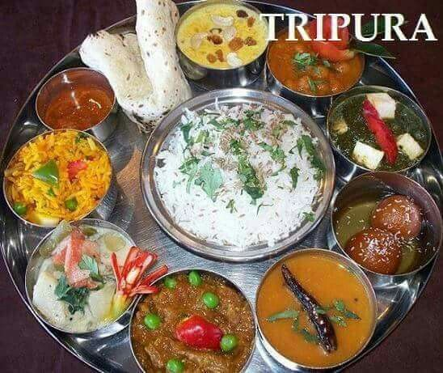
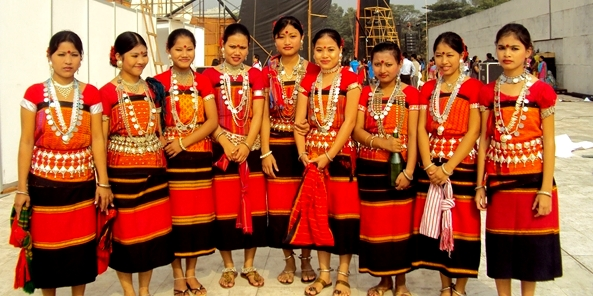
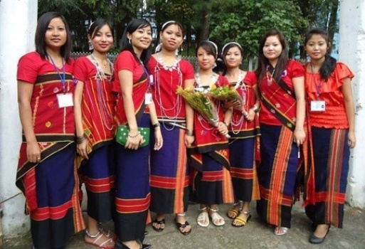
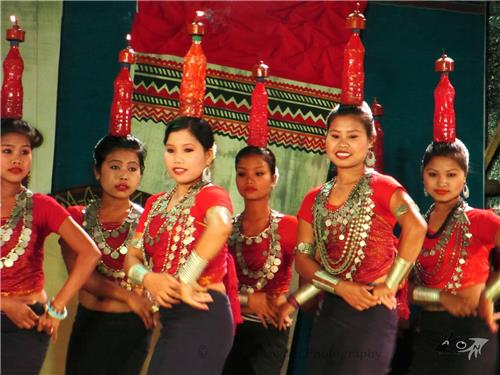
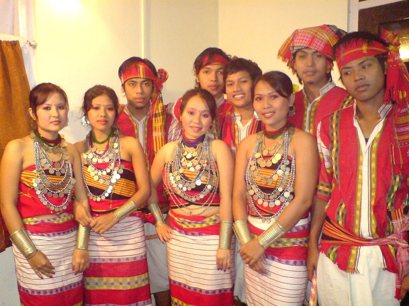
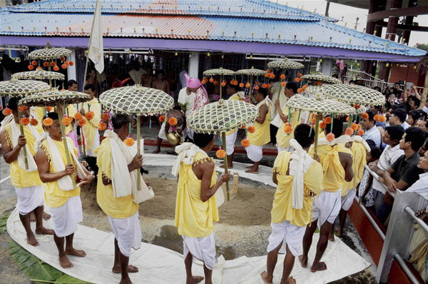

Tripura
- Home
- Food

- Fashion
   
- Festival
- Pous Sankranti Mela
- Kharchi Puja
-
Orange and Tourism Festivall

Orange and Tourism Festival
Orange and Tourism Festival is conducted at Jampui Hills in Tripura which is the only place where beautiful oranges are cultivated. It is a festival to celebrate the bounty of Nature and the gift that Mother Earth has presented her children.
Kharchi Puja
"The world is so empty if one thinks only of mountains, rivers and cities; but to know someone here and there who thinks and feels with us, and though distant, is close to us in spirit - this makes the earth for us an inhabited garden. -
Orange and Tourism Festivall

Pous Sankranti Mela
Pous Sankranti Mela is one of the exquisite fairs held every year at Tripura. It comes along with a festive mood to impart fervor and attachment amongst the people of Tripura with the rest of the world. Pous Sankranti Mela is celebrated with maximum zeal and enthusiasm at Tripura and is visited by most people of the country. - Kharchi Puja
- Pous Sankranti Mela